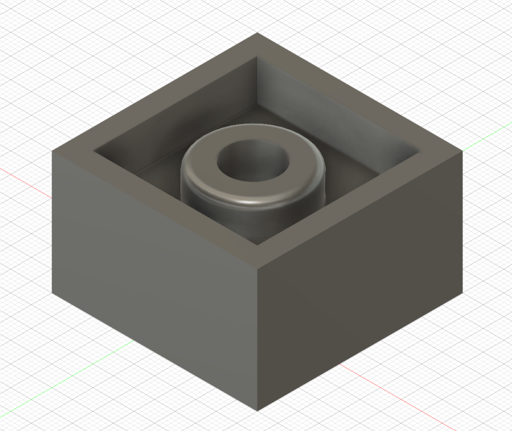
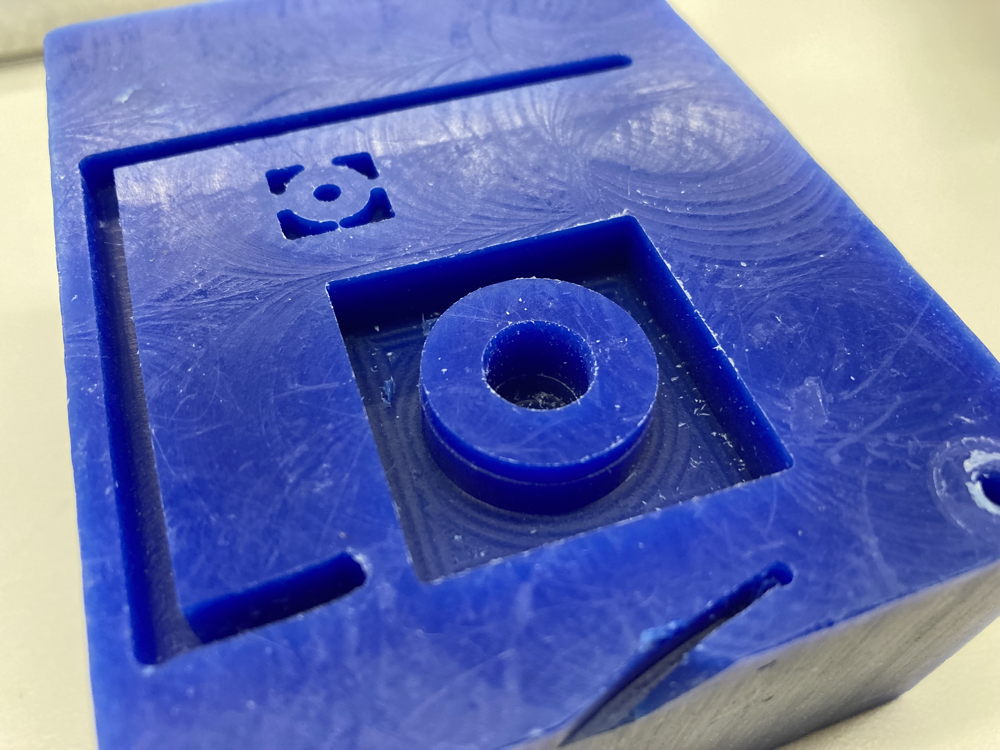

<br>
#### Week 5: CNC Milling, Molding, and Casting
##Assignment
Here is the 2.5D mold created using Fusion360. This is the design of my wheel from 3D printing, but put into shallow walls to create a 2-pc mold to recreate the wheel.
<center>

</center>
Here is the finished cnc'd 2.5D mold for the wheel design. Due to an unknown error, the center of the wheel has a much deeper depth than the rest of the mold. Furthermore, the height of the circle is the same height as the mold walls. This is interesting because the Fusion360 sketch did not have these issues before exporting.
<center>

</center>
Return home: [link](../index.html).